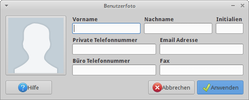

Trusty Tahr
Die Ubuntuversion nach Saucy Salamander heißt 14.04 „Trusty Tahr“ („Treuer Tahr“). Diese Version wird 5 Jahre mit Aktualisierungen versorgt. Der Zeitplan  wurde auf den Developer Summits festgelegt. Im Artikel Downloads/Trusty Tahr sind weitere Informationen zum Herunterladen zu finden.
wurde auf den Developer Summits festgelegt. Im Artikel Downloads/Trusty Tahr sind weitere Informationen zum Herunterladen zu finden.
| Ubuntu 14.04 (LTS) | |
| Basisdaten | |
| Codename / dt. Übersetzung: | Trusty Tahr / Treuer Tahr (Ziegenartige) |
| Status: | Pointrelease 14.04.5 veröffentlicht |
| Veröffentlichungstermin: | 17. April 2014 |
| Unterstützt bis: | April 2019 (Desktop und Server) |
| Zeitleiste | |
| Vorgänger: 13.10 | Nachfolger: 14.10 |
Allgemein¶
Unterstützungszeitraum¶
Die Unterstützung der Desktop-Version entspricht der Server-Version (siehe "Neue Support-Zeiträume für LTS-Versionen"). Für die offiziellen Ubuntu-Varianten heißt das im einzelnen:
Ubuntu, Kubuntu, Edubuntu: 5 Jahre Unterstützung
Xubuntu, Lubuntu, Ubuntu GNOME, Mythbuntu, Ubuntu Studio: 3 Jahre Unterstützung
Bitte auch den Artikel LTS Enablement Stacks beachten, da verschiedene Varianten mit verschiedenen Kerneln existieren, die unterschiedlich lange unterstützt werden (siehe auch nächster Abschnitt).
Kernel¶
Ubuntu 14.04 wird mit Kernel 3.13 ausgeliefert. Ab dem Point Release 14.04.2 werden die "LTS Enablement Stacks" auch in die ISO-Abbilder eingepflegt. Möchte man beim Kernel 3.13 bleiben, der bis 2019 unterstützt wird, sollte man die Version 14.04.1  zur Installation verwenden.
zur Installation verwenden.
Programmaktualisierungen¶
Firefox liegt in der Version 28 vor, Thunderbird bleibt bei Version 24. Allerdings kommen bereits seit Anfang 2012 alle unterstützten Ubuntu-Versionen in den Genuss aktueller Versionen dieser beiden Programme, so dass man 14.04 deswegen nicht installieren muss. LibreOffice ist dagegen in Version 4.2.3 enthalten.
Änderungen von Standard-Software¶
Der Cloud-Dienst "Ubuntu One" wurde Ende Juli 2014 eingestellt (siehe "Das Ende von Ubuntu One"). Vor dem Hintergrund dieser Entscheidung entfällt auch die Integration des Client-Programms. Darüber hinaus ist FFmpeg nicht mehr enthalten. Dessen Aufgabe übernimmt nun Libav, das allerdings erst nachinstalliert werden muss.
System¶
Kein XMir als Standard in Ubuntu 14.04 LTS (siehe auch Mir)
Nutzer von SSDs der Hersteller Intel, Samsung, OCZ, SanDisk und Patriot brauchen in Zukunft nicht mehr manuell zu trimmen (Quelle: Ubuntu 14.04 to Feature SSD TRIM Support By Default
). Da nicht jede SSD automatisch getrimmt werden kann, muss der Hersteller allerdings in einer von Canonical geführten Positivliste enthalten sein.Qt ist in Version 5.2.1 enthalten
Bereits mit Ubuntu 13.10 wurde der Befehl gksudo, mit dem man grafische Programme wie beispielsweise einen Dateimanager oder einen Editor mit Root-Rechten starten kann, durch PolicyKit abgelöst. Praktisch heißt das, dass man das Paket gksu unter Umständen erst nachinstallieren muss.
Die neue Bootoption
forcepaeermöglicht unter bestimmten Umständen auch die Installation auf älteren Computern, die zwar prinzipiell PAE-fähig sind, sich nach außen aber als "ohne PAE" zu erkennen geben. Davon betroffen sind beispielsweise zahlreiche ältere Notebooks mit Pentium M. Leider gibt es keine Garantie, dass diese Methode immer funktioniert, da es auch Prozessoren gibt, die PAE tatsächlich nicht beherrschen.
Ubuntu (Unity)¶

Unity 7.2 (während bei Ubuntu Touch bereits Unity 8.x zum Einsatz kommt, soll die besser erprobte Vorgängerversion als Grundlage für die LTS-Version dienen)
Neue Konfigurations-Oberfläche als Abspaltung (engl. "fork") der GNOME3 Systemeinstellungen (Quelle: Ubuntu Confirm GNOME Control Centre Fork for 14.04
, 12/2013)Locally Integrated Menus (LIM) (Quelle: Ubuntu 14.04 kickt das globale Menü
 , 02/2014)
, 02/2014)Die Web-Apps (Webseiten, die in eigenständigen Fenstern ausgeführt werden) wurden überarbeitet. Diese Technik mit dem Namen Oxide
basiert auf Chromium.
Kubuntu (KDE SC)¶
 Kubuntu verwendet KDE SC 4.13 als Grundlage. Diese Version erschien zeitgleich mit Ubuntu 14.04. Der Browser rekonq wurde durch Firefox als Standardbrowser ersetzt. Als Grund wird die bessere Unterstützung von Sicherheits-Aktualisierungen für Firefox über die offiziellen Paketquellen angegeben (Quelle ).
Kubuntu verwendet KDE SC 4.13 als Grundlage. Diese Version erschien zeitgleich mit Ubuntu 14.04. Der Browser rekonq wurde durch Firefox als Standardbrowser ersetzt. Als Grund wird die bessere Unterstützung von Sicherheits-Aktualisierungen für Firefox über die offiziellen Paketquellen angegeben (Quelle ).
Mehr Informationen zu den Neuerungen finden sich in den Beiträgen  Kubuntu 14.04 und KDE SC 4.13 mit neuer semantischer Suche (Golem, 04/2014).
Kubuntu 14.04 und KDE SC 4.13 mit neuer semantischer Suche (Golem, 04/2014).
Xubuntu (Xfce)¶
 Mit Xubuntu 14.04 LTS entsteht eine starke Konkurrenz zur noch bis April 2015 (durch die Entwickler) gepflegten Langzeitversion Xubuntu 12.04 LTS. Das liegt hauptsächlich daran, dass das kurz nach der Veröffentlichung von 12.04 erschienene Xfce 4.10 inzwischen ausgereift ist und an vielen Stellen deutliche Verbesserungen gegenüber dem Vorgänger Xfce 4.8 bietet. Einen Überblick zu den Neuerungen bietet die Tour durch Xfce 4.10 .
Mit Xubuntu 14.04 LTS entsteht eine starke Konkurrenz zur noch bis April 2015 (durch die Entwickler) gepflegten Langzeitversion Xubuntu 12.04 LTS. Das liegt hauptsächlich daran, dass das kurz nach der Veröffentlichung von 12.04 erschienene Xfce 4.10 inzwischen ausgereift ist und an vielen Stellen deutliche Verbesserungen gegenüber dem Vorgänger Xfce 4.8 bietet. Einen Überblick zu den Neuerungen bietet die Tour durch Xfce 4.10 .
Daneben wurden eine Reihe von Xubuntu-spezifischen Änderungen umgesetzt:
|  |
| Benutzerinformationen bearbeiten |
Whisker Menu als Ersatz für das Xfce-Anwendungsmenü
Mugshot zum Bearbeiten der Benutzerinformationen (siehe auch Mugshot, Quick & Easy User Config
)Light-Locker als Bildschirmschoner (und als Ersatz für XScreenSaver)
Neue Hintergrundbilder und ein überarbeitetes Design
Sean Michael Davis beschreibt in seinem Blogbeitrag 14 Features of Xubuntu 14.04 die neuen Funktionen.
Lubuntu (LXDE)¶
 14.04 ist die erste offizielle LTS-Version von Lubuntu. Der Support-Zeitraum durch die Entwickler wird 3 Jahre betragen. Da sich das LXDE-Team auf die Entwicklung von LXQt konzentriert, könnte Lubuntu 14.04 die letzte Version sein, die auf die Kombination LXDE und GTK aufbaut. Weiterhin bedeutet das, dass außer einer neuen Version 1.2 des Dateimanagers PCManFM und Aktualisierungen einiger Standardprogramme keine weiteren Änderungen vorhanden sind (wenn man von den üblichen kleineren Designanpassungen absieht).
14.04 ist die erste offizielle LTS-Version von Lubuntu. Der Support-Zeitraum durch die Entwickler wird 3 Jahre betragen. Da sich das LXDE-Team auf die Entwicklung von LXQt konzentriert, könnte Lubuntu 14.04 die letzte Version sein, die auf die Kombination LXDE und GTK aufbaut. Weiterhin bedeutet das, dass außer einer neuen Version 1.2 des Dateimanagers PCManFM und Aktualisierungen einiger Standardprogramme keine weiteren Änderungen vorhanden sind (wenn man von den üblichen kleineren Designanpassungen absieht).
Eine bereits mit Ubuntu 13.10 eingeführte Änderung sorgt allerdings für Ungemach: Lubuntu ist in der Voreinstellung nicht mehr kompatibel mit den Autostart-Spezifikationen von freedesktop.org. Details sind dem Artikel Autostart zu entnehmen. Davon ist auch der NetworkManager betroffen. Das Starten von Programmen mit der Tastenkombination Alt + F2 steht erst nach einer Konfigurationsänderung wieder zu Verfügung.
Ubuntu GNOME¶

erste offizielle LTS-Version (mit 3 jährigem Support-Zeitraum)
basiert auf GNOME 3.10
GNOME Classic-Sitzung vorhanden (siehe auch Gnome Classic – die Gnome-Shell macht auf alt
, Blogbeitrag 02/2014)
Weitere Details sind im Artikel Geschichte von GNOME zu finden.
Links¶
Ubuntu 14.04 „Trusty Tahr“ ist erschienen - Ikhaya, 04/2014
Veröffentlichungshinweise und bekannte Fehler:


Endgültige Beta-Version verfügbar – Ikhaya (UWR), 13/2014
Kurzmitteilung zur Alpha-1 – Ikhaya (UWR), 12/2013
Nach Saucy Salamander kommt Trusty Tahr – Ikhaya, 10/2013
Blogeintrag
von Mark Shuttleworth zu Trusty Tahr
Trusty Tahr (14.04): Allgemeine Diskussion zur Entwicklungsversion (hier im Forum)
14.04 (Trusty Tahr) Beta 1 Available – Ubuntu-Mailinglist, devel-announce
14.04 (Trusty Tahr) Alpha 2 Available – Ubuntu-Mailinglist, devel-announce
Trusty Tahr in Launchpad
- Erstellt mit Inyoka
-
 2004 – 2017 ubuntuusers.de • Einige Rechte vorbehalten
2004 – 2017 ubuntuusers.de • Einige Rechte vorbehalten
Lizenz • Kontakt • Datenschutz • Impressum • Serverstatus -
Serverhousing gespendet von